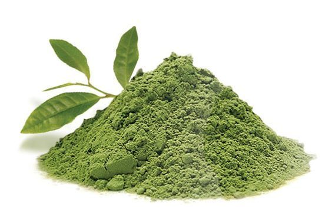

Tips Penggunaan Bahan Alami untuk Perawatan Kulit dari Luar yang Lebih Efektif
Lidah Buaya

Lidah buaya memiliki kandungan gel yang kaya akan vitamin, mineral, dan antioksidan yang mampu melembapkan sekaligus menenangkan kulit yang iritasi atau terbakar sinar matahari.
- Ambil gel lidah buaya segar dari daun, pastikan tanpa getah kuning agar tidak iritasi.
- Oleskan secara merata pada wajah dan area kulit yang membutuhkan perawatan.
- Diamkan selama 20-30 menit agar kulit menyerap nutrisi.
- Bilas dengan air hangat dan keringkan dengan tepukan lembut menggunakan handuk.
Frekuensi: 3-4 kali seminggu, khususnya untuk kulit yang sensitif atau bermasalah.
Tips: Simpan gel lidah buaya di kulkas agar terasa lebih segar saat diaplikasikan.
Bengkoang
Bengkoang kaya akan vitamin C dan antioksidan yang berfungsi mencerahkan dan menghaluskan kulit, serta membantu mengurangi noda hitam.
- Parut bengkoang segar, lalu peras untuk mengambil sari atau airnya.
- Gunakan sari bengkoang sebagai toner dengan mengusapnya pada wajah menggunakan kapas.
- Atau buat masker dengan mencampur sari bengkoang dengan sedikit tepung beras, aplikasikan selama 15 menit.
- Bilas wajah dengan air hangat hingga bersih.
Frekuensi: Toner 1 kali sehari, masker 2 kali seminggu.
Tips: Gunakan bengkoang segar dan hindari penyimpanan terlalu lama agar manfaat vitamin tetap maksimal.
Kunyit

Kunyit mengandung kurkumin yang bersifat anti-inflamasi dan antioksidan, efektif untuk mengatasi jerawat dan memperbaiki tekstur kulit.
- Campurkan 1 sendok teh bubuk kunyit dengan 2 sendok makan madu atau yogurt sebagai bahan dasar masker.
- Oleskan campuran masker pada wajah secara merata.
- Diamkan selama 10-15 menit, kemudian bilas dengan air hangat hingga bersih.
- Gunakan handuk lembut untuk mengeringkan wajah.
Frekuensi: 1-2 kali seminggu untuk kulit berjerawat atau kusam.
Tips: Hindari pemakaian berlebihan karena kunyit dapat meninggalkan noda kuning pada kulit dan pakaian.
Madu

Madu bersifat antibakteri dan pelembap alami, baik untuk menjaga kelembapan dan membantu penyembuhan luka kecil di kulit.
- Gunakan madu murni, oleskan tipis-tipis ke seluruh wajah.
- Diamkan selama 15-20 menit sebagai masker.
- Bilas dengan air hangat dan keringkan dengan lembut.
Frekuensi: Bisa digunakan setiap hari, terutama saat kulit kering atau iritasi ringan.
Tips: Campurkan madu dengan yogurt untuk hasil pelembap dan eksfoliasi ringan sekaligus.
Jeruk Nipis

Jeruk nipis kaya vitamin C yang membantu mengontrol minyak berlebih dan membersihkan pori-pori, mencegah jerawat.
- Peras jeruk nipis dan encerkan dengan air (1:2) untuk mengurangi keasaman.
- Gunakan kapas untuk mengaplikasikan cairan ke wajah sebagai toner.
- Hindari pemakaian sebelum keluar rumah agar kulit tidak sensitif terhadap sinar matahari.
Frekuensi: 3-4 kali seminggu pada malam hari.
Tips: Selalu gunakan tabir surya pada pagi hari setelah penggunaan jeruk nipis untuk melindungi kulit.
Beras

Air rendaman beras mengandung allantoin dan ferulic acid yang berfungsi mencerahkan dan melembutkan kulit.
- Rendam ½ cangkir beras dalam air selama 3-4 jam, lalu aduk dan saring airnya.
- Gunakan air beras tersebut untuk mencuci wajah secara lembut.
- Atau gunakan sebagai toner dengan cara mengusapkan pada wajah menggunakan kapas.
Frekuensi: Setiap hari atau minimal 3 kali seminggu.
Tips: Gunakan beras organik untuk hasil yang lebih maksimal dan bebas residu pestisida.
Kopi
Kopi kaya akan antioksidan dan kafein yang dapat mengencangkan kulit dan mengurangi pembengkakan.
- Campur ampas kopi dengan minyak kelapa atau madu untuk scrub alami.
- Usapkan scrub secara perlahan pada wajah dengan gerakan memutar selama 2-3 menit.
- Bilas dengan air hangat dan keringkan.
Frekuensi: Maksimal 2 kali seminggu agar kulit tidak iritasi.
Tips: Jangan gosok terlalu keras agar kulit tetap lembut dan tidak terluka.
Minyak Kelapa

Minyak kelapa efektif melembapkan kulit dan memiliki sifat antibakteri serta antijamur.
- Oleskan minyak kelapa secukupnya pada wajah yang sudah dibersihkan, terutama area kering.
- Pijat lembut selama 1-2 menit untuk merangsang sirkulasi darah.
- Bisa digunakan sebagai pelembap malam hari atau minyak pijat.
Frekuensi: Setiap malam atau sesuai kebutuhan kulit.
Tips: Jika kulit Anda cenderung berminyak, gunakan minyak kelapa dengan hati-hati dan lakukan tes alergi terlebih dahulu.
Timun

Timun mengandung banyak air dan silika yang menyegarkan kulit dan mengurangi pembengkakan terutama di area mata.
- Potong timun menjadi iris tipis dan tempelkan pada kelopak mata selama 15 menit.
- Untuk masker wajah, haluskan timun dan aplikasikan sebagai masker selama 20 menit.
- Bilas dengan air dingin dan tepuk kering dengan handuk lembut.
Frekuensi: Bisa dilakukan setiap hari terutama untuk melembapkan dan menyegarkan kulit.
Tips: Simpan timun dalam kulkas agar efek menyegarkannya lebih maksimal saat dipakai.
Teh Hijau

Teh hijau kaya akan antioksidan yang membantu melawan radikal bebas dan meredakan peradangan kulit.
- Seduh teh hijau dan biarkan dingin.
- Gunakan kapas untuk mengaplikasikan teh hijau ke wajah sebagai toner atau kompres.
- Bisa juga dicampurkan dengan madu untuk masker antioksidan.
Frekuensi: 3-4 kali seminggu untuk perawatan kulit sensitif dan berjerawat.
Tips: Simpan teh hijau dalam kulkas untuk pemakaian yang lebih menyegarkan.
Susu

Susu mengandung asam laktat alami yang berfungsi mengangkat sel kulit mati dan melembapkan kulit.
- Rendam kapas dengan susu dingin dan usapkan ke seluruh wajah sebagai toner.
- Untuk masker, campurkan susu dengan madu atau oatmeal dan aplikasikan selama 15 menit.
- Bilas dengan air hangat dan keringkan wajah dengan lembut.
Frekuensi: 2-3 kali seminggu untuk hasil maksimal.
Tips: Gunakan susu segar dan simpan di kulkas untuk menjaga kesegarannya.
Putih Telur
Putih telur dapat membantu mengencangkan kulit dan mengecilkan pori-pori, baik untuk kulit berminyak dan kombinasi.
- Pisahkan putih telur dari kuningnya dan kocok hingga sedikit berbusa.
- Oleskan putih telur secara merata ke wajah, hindari area mata.
- Diamkan selama 15-20 menit sampai mengering, kemudian bilas dengan air hangat.
Frekuensi: 1-2 kali seminggu.
Tips: Hindari penggunaan jika Anda alergi telur. Gunakan masker ini pada malam hari untuk hasil optimal.
Lemon
Lemon kaya vitamin C dan asam sitrat yang dapat mencerahkan kulit, mengurangi bintik hitam, dan membantu eksfoliasi.
- Peras air lemon dan campurkan dengan sedikit air untuk mengurangi keasaman.
- Gunakan kapas untuk mengoleskan pada area kulit wajah yang ingin dicerahkan.
- Diamkan selama 5–10 menit, lalu bilas dengan air bersih.
Frekuensi: 2-3 kali seminggu, pada malam hari.
Tips: Gunakan tabir surya keesokan harinya karena lemon membuat kulit lebih sensitif terhadap sinar matahari.
Tomat
Tomat mengandung likopen yang membantu melindungi kulit dari kerusakan akibat sinar UV dan mencerahkan kulit kusam.
- Haluskan tomat matang dan oleskan langsung ke wajah sebagai masker.
- Biarkan selama 15 menit, kemudian bilas dengan air dingin.
Frekuensi: 2-3 kali seminggu.
Tips: Bisa dicampur dengan madu untuk menambah kelembapan.
Alpukat

Alpukat kaya lemak sehat, vitamin E, dan antioksidan yang sangat baik untuk melembapkan dan menutrisi kulit kering.
- Haluskan daging buah alpukat dan oleskan merata pada wajah bersih.
- Diamkan selama 20 menit, lalu bilas dengan air hangat.
Frekuensi: 2-3 kali seminggu untuk kulit kering dan normal.
Tips: Campurkan dengan yogurt untuk efek lebih menenangkan.